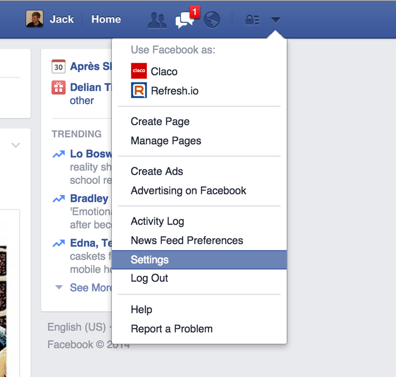
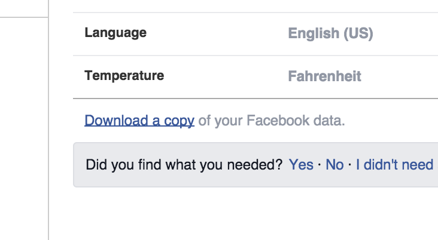
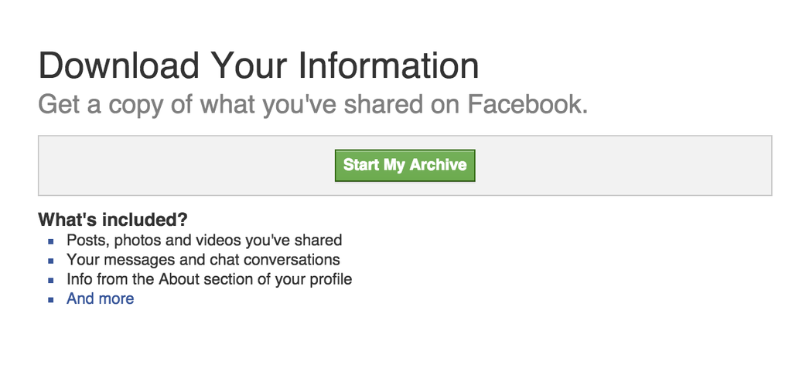
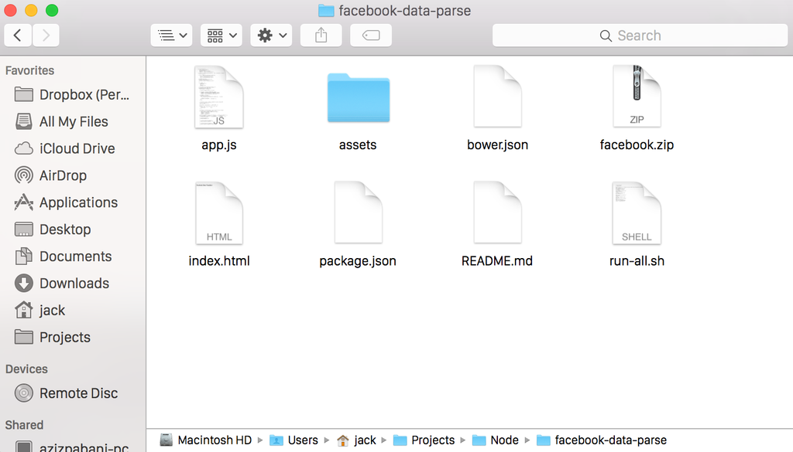

Step 1
- First, head over to your facebook settings

- On the settings page, click "Download a copy of your facebook data"

- Then Click the green "Start my Archive" Button.

-
Step 2
By now you should have downloaded both the application and your data from facebook
- Unzip the application and then drag the the facebook-USERNAME.zip into the file you just unzipped. Rename the facebook-USERNAME.zip file to just "facebook.zip". The directory should look exactly the same as below.

Step 3
Lastly open up terminal and cd into the directory. If you didn't move it out of your downloads the command should be "cd Downloads/facebook-data-parse". Once you're in the correct directory, simply type "./run-all.sh"
That's it!